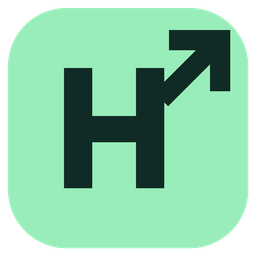

Lances que acompanham o mercado.
Monitore suas ordens e permita ajustes automáticos conforme a margem que você definir.
- Aumento e redução de lances
- Acompanhamento de cada ordem
- Criação de ordens ao haver saldo, quando ativada

hashratemanagerHASHSELL + RENTALHASH
Acompanhe suas ordens, automatize lances e veja seus resultados. Tudo em um aplicativo gratuito para o seu computador.
Windows e Mac · Gratuito · Versão mais recente
CONTROLE DA OPERAÇÃO
Interface ilustrativa. Não representa resultados reais.
DA OPERAÇÃO AO RESULTADO
Um lugar para acompanhar o que está acontecendo e escolher como quer operar.
Monitore suas ordens e permita ajustes automáticos conforme a margem que você definir.
Veja receita, consumo, taxas e lucro acumulado, com histórico e estimativas para os próximos dias.
Acompanhe o histórico de saques da RentalHash e a estimativa de espera baseada nas suas operações anteriores.
SEM COMPLICAR
Suas contas continuam nas plataformas.
O aplicativo reúne o
acompanhamento.
Escolha o instalador para Windows ou Mac e abra o Hashrate Manager.
Entre na Hashsell e na RentalHash pelas abas do aplicativo.
Defina sua margem, inicie o acompanhamento e ative os ajustes ou novas ordens automáticas quando desejar.
ANTES DE BAIXAR
Sim. Você pode usar o sistema gratuitamente. Se quiser apoiar a continuidade do projeto, há uma opção de contribuição voluntária no aplicativo.
Sim. O acompanhamento e as operações automáticas funcionam enquanto o aplicativo estiver aberto e o computador conectado à internet.
No Windows, o aplicativo verifica atualizações após abrir e a cada hora. No Mac, use “Atualizações para Mac” para baixar a nova versão no site. Os links desta página acompanham a versão mais recente publicada para cada sistema.
Não. A margem configurada orienta os lances, mas preços, entrega de potência, taxas e disponibilidade das plataformas podem mudar. Previsões são estimativas. As operações usam saldo real e precisam ser acompanhadas.
Sessões e configurações ficam no seu perfil local. O app envia métricas anônimas de uso e versão, que podem ser desativadas em Configurações > Privacidade. Contas, senhas, ordens e saldos não fazem parte dessas métricas.
Há versões para Windows 64 bits e para Mac com Apple Silicon ou Intel. Ainda não há uma versão para celular.
FEITO COM APOIO DA COMUNIDADE
O Hashrate Manager é totalmente gratuito. Sua contribuição, de qualquer valor, ajuda a manter o projeto e desenvolver novos recursos.
Opcional. Todos os recursos continuam disponíveis.
PRONTO PARA COMEÇAR?
Baixe gratuitamente a versão mais recente do Hashrate Manager.
Mac com chip Apple (série M)
Mac IntelVersão Mac mais recente
Versão sem assinatura Apple. O macOS pode impedir a abertura. Atualizações para Mac são baixadas pelo site.